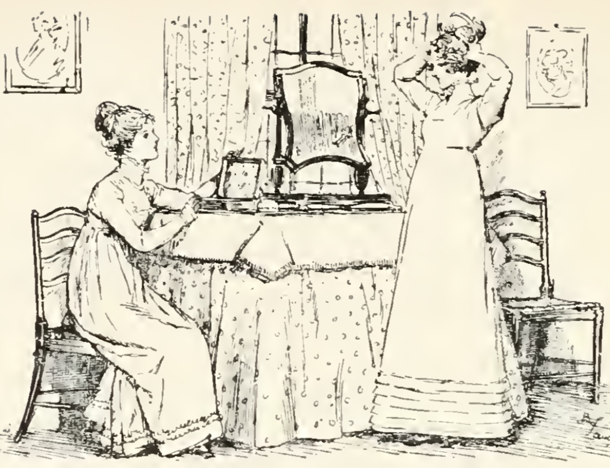
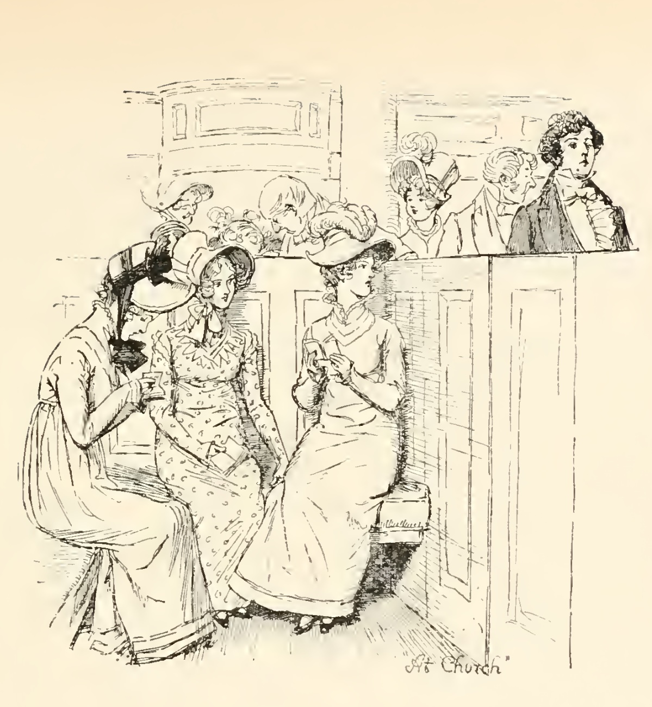

Джейн Беннет – героиня романа Дж. Остин «Гордость и предубеждение», старшая из пятерых сестер Беннет. Ее образ выстраивается посредством точек зрения других героев, описаниям всевидящей нарраторки, а также с помощью суждений самой героини, что бывает, однако, крайне редко.

Впервые Джейн упоминается в первой главе первой книги, когда мистер и миссис Беннет обсуждают нового жителя, арендовавшего Незерфилд-парк. Мать девочек считает, что это хорошая возможность выдать одну из сестер замуж, и замечает: «Лиззи ничуть не лучше других ваших дочерей. Я уверена, что она и вполовину не так красива, как Джейн и гораздо менее добродушна, чем Лидия» (Остин Дж. Указ. соч. С. 7). Далее, на протяжении всего романа миловидная внешность Джейн будет подчеркиваться всеми персонажами - именно эта ее характеристика выступает одной из главных. Кроме того, роман получает свое развитие именно благодаря красоте старшей мисс Беннет еще в начале, так как даже мистер Дарси во время бала подчеркивает: «Вы танцуете с единственной хорошенькой девицей в этом зале» (Остин Дж. Указ. соч. С. 16-17), разговаривая с мистером Бингли и получая его согласие с этими словам. Далее, в приезд мистера Коллинза разворачиваются похожие события, когда герой выбирает объектом любовных чувств Джейн, обращая внимание на ее красоту: «Созерцание прелестного личика мисс Беннет старшей, напротив, укрепило мистера Коллинза в его намерениях, <…> на протяжении первого вечера его избранницей сделалась Джейн» (Остин Дж. Указ. соч. С. 96). Итак, первым, что бросается в глаза окружающим, является обаятельность героини, которая и зарождает чувства Бинги, тем самым начиная любовный конфликт. Однако затем становятся очевидны и выдающиеся внутренние качества героини. Стоит отметить, что сестры мистера Бингли не питают к Джейн настолько негативных чувств, как к Элизабет: «Мисс Беннет так и осталась миленькой девочкой и в соответствии с этим мистеру Бингли было дозволено относиться к ней так, как ему заблагорассудится». Это связано не только с тем, что «угрозу» в отношении Дарси составляет именно Лиззи, тогда, как Джейн привлекает внимание лишь Бингли, но и с тем, что хорошенькая внешность старшей мисс Беннет соотносится с ее добродушным, кротким характером, а красота не является роковой или холодной.

Во время первого бала героиню называют «самой образованной барышней в округе» (Остин Дж. Указ. соч. С. 18), позже мы узнаем о ее добром, светлом сердце, жизнерадостности, спокойствии, благородности. Джейн является «всеобщей любимицей» (Остин Дж. Указ. соч. С. 329), искренне желает, чтобы все были счастливы, никогда не думает плохо о людях, пытаясь в каждом найти что-то хорошее или как-либо оправдать их. Помимо этого, она очень редко говорит о своих чувствах и истинных желаниях, делая все в угоду семьи или же здравому смыслу. Во многом из-за ее скрытности и скромности Бингли быстро верит словам Дарси о невзаимности его чувств. При этом, мисс Беннет не раз демонстрирует внутренний стержень, силу духа, а нарраторка замечает, что непреклонность также была свойственна ей, когда та была уверена в правильности своих поступков. Следовательно, перед нами образ, чем-то схожий с центральным персонажем, но отличающийся от нее мягкостью и отсутствием «дерзости» (Остин Дж. Указ. соч. С. 520), который подчеркивает в себе Лиззи.
Именно любовная линия Джейн и желание матери удачно выдать дочерей замуж оказываются одними из главных сюжетообразующих элементов. Писательница же, как отмечает E. M. Halliday в исследовании «Narrative Perspective in Pride and Prejudice», создает такой эффект намеренно. Читателям кажется, что весь роман будет о старшей мисс Беннет, ее отношениях с мистером Бингли, которые, возможно, станут жертвой «гордости и предубеждений». Однако вскоре становится очевидным, что главная героиня - это Элизабет, и все внимание сосредотачивается на ней и на том, как она видит происходящее вокруг. Так, Джейн остается как будто в тени сестры: и в сюжете, и в конструировании образа. Ее перспектива обычно пересказывается словами нарраторки, Элизабет или другими персонажами, а голос самой Джейн мы слышим довольно редко. Судьба героини, несмотря на старшинство, кажущееся преимуществом, является такой все время. Безусловно, из пятерых сестер писательница выделяет Джейн и Элизабет особенно, другие герои также считают их самыми разумными, выдающимися представительницами семьи Беннет (например, сестры Бингли остаются невысокого мнения о мисис Беннет и других ее дочках, а две старшие, наоборот, приходятся им очень по душе; также мистер Беннет отмечает: именно без «Джейн и Элизабет вечерние разговоры потеряли значительную часть своего остроумия и почти весь свой смысл» (Остин Дж. Указ. соч. С. 82)) но Джейн Беннет не оказывается центральной и выделяющейся героиней. Э. Ауэрбах в своей монографии «В поисках Джейн Остин» замечает, что героини, похожие на Джейн, нередко встречали в литературе до этого, ее образ имеет черты типичной в то время «идеальной» женщины. Лиззи же совсем не такая: она смелее, чувственнее, свободнее старшей мисс Беннет, которая редко говорит, что думает, делает все ради других, ищет во всем лишь хорошее и почти никогда не показывает эмоций. Сестры сами понимают, насколько и их характеры, и их судьбы различаются: Элизабет, например, говорит об «исключительной привилегии смотреть на мир сквозь розовые очки» (Остин Дж. Указ. соч. С. 187), которая среди них двоих есть лишь у Джейн.
Важно подчеркнуть: главная сюжетная линия в романе - линия Элизабет и Дарси, однако любовные отношения старших сестер в целом развертываются почти параллельно. Очень часто сестры ощущают похожие эмоции, и лишь разные причины разделяют их: «Обеим сестрам было очень не по себе. Обеих переполняли собственные переживания и взаимное сочувствие» (Остин Дж. Указ. соч. С. 455). Кроме того, знакомство, развитие отношений и благополучный финал со свадьбой каждая проходит примерно в одно и тоже время. Однако их судьбы отличаются, так как «если на пути <…> Джейн и мистера Бингли, встают какие-то реальные препятствия, которых мы скорее ожидаем в тексте романа — не вполне приключенческого, но тем не менее развивающегося по этим законам, то на пути мистера Дарси и Элизабет встают прежде всего внутренние препятствия». (Смолярова Т. Джейн Остин. «Гордость и предубеждение». Почему Джейн Остин в своем романе так увлеклась темой зрения и оптики // Arzamas.academy. URL: Джейн Остин. «Гордость и предубеждение» • Расшифровка эпизода • Arzamas (дата обращения: 09.12.2024)). В конце концов же обе сестры получают счастливый брак по любви. В целом, Джейн и Элизабет наиболее близки именно друг с другом, являются не только сестрами, но и близкими подругами, что особенно чувствует Лиззи, когда Шарлотта уезжает. Старшие мисс Беннет делятся абсолютно всем, готовы прийти на помощь и поддержать. В конце романа нарраторкой делается особый акцент: в конечном итоге сестры поселяются близко друг к другу, что, конечно, является намеком на продолжение их теплых и доверительных отношений.
Таким образом, с помощью перспектив различных героев, замечаний самой нарраторки и складывается цельное представление о Джейн Беннет. Кажущийся на первый взгляд типичный образ все равно раскрывается немного по-иному, не только дополняя главную героиню, ее судьбу, характер, но и показывая, как складывается жизнь ее благонравной и добросердечной сестры, так же выбравшей выйти замуж по любви.
Библиография:
Остин Дж. Гордость и предубеждение / Подг. изд. Н. М. Демурова, И. С. Маршак, Б. Б. Томашевский; отв. ред. М. П. Алексеев; пер. с англ. И. С. Маршака // Литературные памятники. М.: Издательство «Наука», 1967.
Смолярова Т. Джейн Остин. «Гордость и предубеждение». Почему Джейн Остин в своем романе так увлеклась темой зрения и оптики // Arzamas.academy. URL: Джейн Остин. «Гордость и предубеждение» • Расшифровка эпизода • Arzamas (дата обращения: 09.12.2024)
Halliday E. M. Narrative Perspective in Pride and Prejudice // Nineteenth-Century Fiction. 1960. Vol. 15. № 1. Pp. 65—71.
Палий А. А. Интерпретация творчества Джейн Остин в монографии Э. Ауэрбах «в поисках Джейн Остин» // Наука о человеке: гуманитарные исследования. 2014. №4 (18).
McCullough C. The Independence of Miss Mary Bennet. New York: Pocket, 2008.